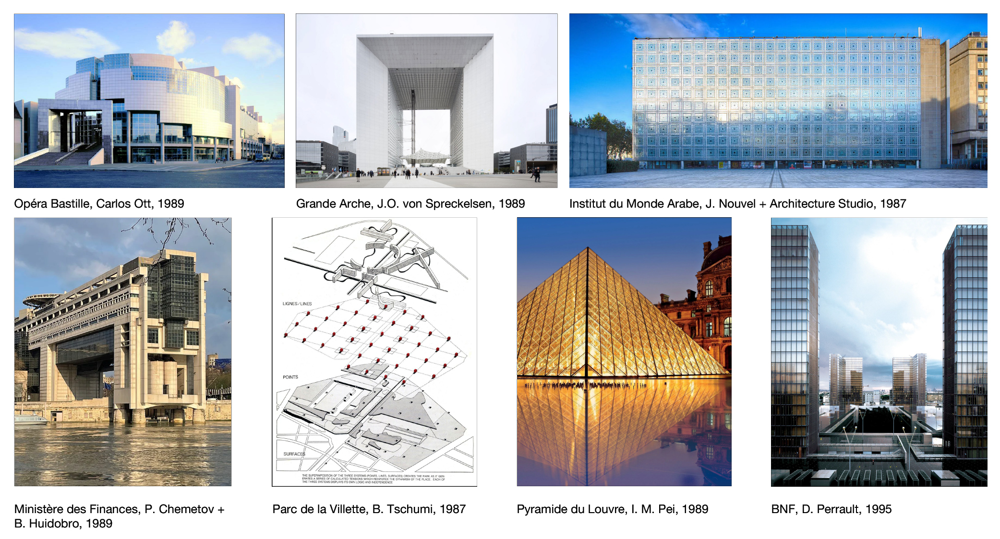
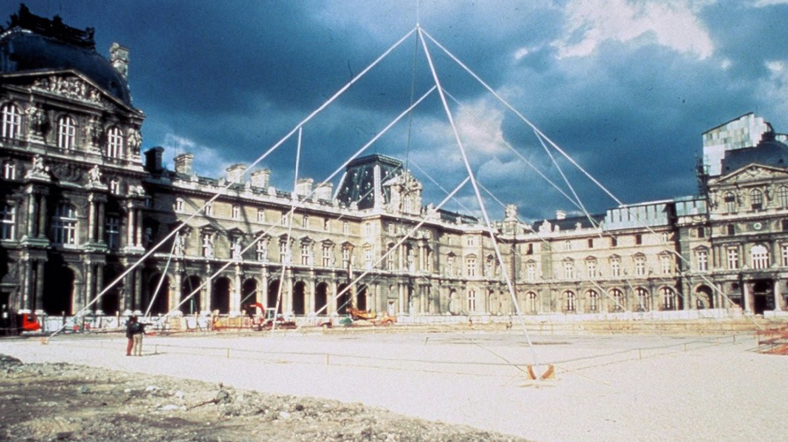
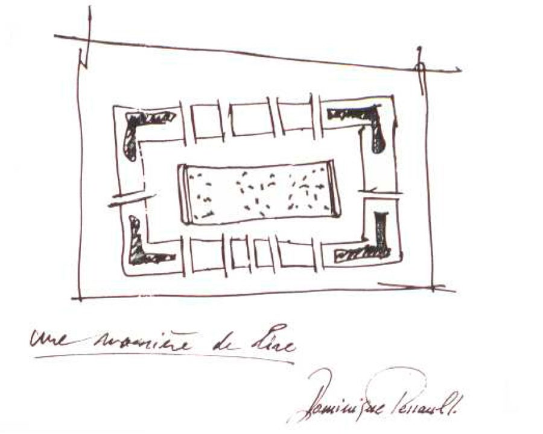
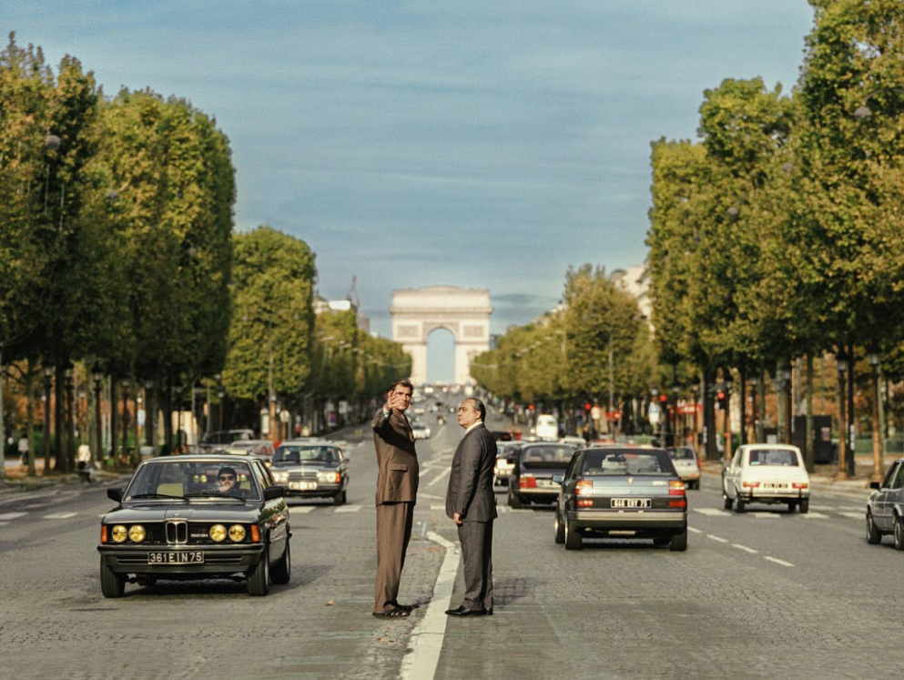

Les Grands Travaux mitterrandiens, Mythologie postmoderne française à l’épreuve du temps
Louis Voyer
Club ASAP 11
septembre 2026
Temps de lecture : 10 min
Je vais vous parler d’une obsession personnelle qui est celle des grands projets présidentiels français sous la Ve république, plus précisément ceux entrepris sous les septennats de Mitterrand. Ce sont les plus nombreux et les plus représentatifs, aucun autre représentant de la Ve n’ayant fait construire autant que lui, avant ou après.
Il faut bien préciser que cette histoire politique du grand projet d’état dont je vais faire mention est quasi exclusivement parisienne bien qu’elle relate d’une emprise politique et symbolique sur l’ensemble du territoire français.
Avant Mitterrand, l’un des premiers grands exemples de projet entrepris par un président de la République, est celui du Centre Beaubourg, réalisé sur le plateau Beaubourg. Ce projet culturel fût entrepris par Pompidou (qui donnera plus tard son nom au centre) et fût achevé sous le septennat de Valérie Giscard d’Estaing au mitan des années 1970.
On y retrouve déjà les éléments de la recette du grand projet présidentiel parisien :
- projet culturel
- très grande échelle
- projet polémique car en rupture avec son environnement urbain et architectural direct
Beaubourg augure une certaine forme de grand projet d’état à visée culturelle concentré au cœur de Paris, dont la visée se veut notamment symbolique.
Mitterrand est élu une première fois en mai 1981. C’est la première fois que la gauche est au pouvoir en France sous la Ve République. Je vais mettre de côté les différentes phases politiques comme le tournant de la rigueur, les cohabitations etc des septennats de Mitterrand et me concentrer sur la politique de bâtisseur sous son mandat.
Les projets réalisés dont on parle habituellement sont les suivants :

A l’époque, la nécessité de ces projets est justifiée notamment par un besoin de modernisation. De fait, certains équipements comme la BNF ont une utilité de fait au regard de l’état du site de Richelieu de l’époque, ou le déménagement du ministère des Finances de la cour du Louvre vers le nouveau site de Bercy dans le 12e arrondissement. On peut également envisager la création de l’institut du monde arabe dans un contexte géopolitique qui nécessitait de tisser des liens et d’ouvrir de nouvelles voies à l’époque où celles-ci n’existaient pas.
Toutefois, ces nécessités s’expliquent difficilement au regard de la concentration jacobine, c’est-à-dire la centralisation à la française dont elles font l’objet au cœur de Paris.
Pour comprendre cette concentration, il faut rappeler que celle-ci s’inscrit dans une tradition du pouvoir bâtisseur à la française. L’histoire politique moderne compte plusieurs exemples manifestes de réalisations physiques qui dépassent le simple cadre de l’architecture et de l’urbanisme pour devenir des transcriptions dans le monde physique du pouvoir politique.
On pense par exemple à Versailles dont l’échelle et l’ingénierie ont contribué à la grandeur symbolique du pouvoir royal par exemple. Le Second Empire s’est ensuite accompli en partie par la transformation radicale de Paris intra-muros réalisé sous l’égide du préfet Haussmann.
Dans cette veine, on peut donc sans peine imaginer le Grand Projet présidentiel s’inscrire dans cette lignée et donc être la manifestation physique du pouvoir, et pourquoi pas dans le cas de l’époque mitterrandienne d’incarner la volonté d’un Homme. Ce qui le rapprocherait un peu plus des monarchies et empires dont nous venons de parler à l’instant, et nourrit un peu plus les accusations en « monarchie présidentielle » (pas illégitimes).
Un autre pan du mythe du projet présidentiel nous amène vers l’analyse d’un second élément historique. L’époque est alors à la montée en puissance du capitalisme mondialisé (processus déjà bien entamé à ce moment), mais surtout à la propagation de l’idéologie néo-libérale impulsée aux Etats-Unis sous Reagan, et prolongée en Europe à travers un personnage comme Thatcher.
Le développement de ces idéologies se fait au moment de l’effondrement des méta-récits politiques nationaux (cf. plein de présentations ASAP précédentes) notamment avec l’enchaînement du tournant de la rigueur en 1983 (échelle nationale) puis de l’effondrement du bloc soviétique qui achève de disqualifier le grand récit marxiste comme horizon pour une partie de l’occident (échelle supra-nationale).
Le récit présentiste du néo-libéralisme donne donc, à l’époque, un puissant contrepoint au pouvoir socialiste dont on peut imaginer qu’il a essayé contrebalancer l’effet idéologique par un mouvement de balancier inverse en impulsant un grand nombre de projets architecturaux qui feraient à terme le récit de sa grandeur.
La première opération dont nous venons de parler, (l’inscription du projet présidentiel dans une histoire politique plus large ou dans une bataille idéologique contemporaine d’alors) est suivie par une seconde opération qui va inscrire cette batterie de projet réalisée dans un temps relativement court dans le mythe. Selon Barthes, le mythe transforme l’histoire en nature. Ce qui est contingent et construit, se donne à voir comme évident ou éternel.
Naturaliser les projets d’architecture réalisés sous l’égide du pouvoir mitterrandien, c’est donc les vider de leur substance politique là où ils relèvent directement d’un pouvoir politique. Ces éléments de naturalisation et de dépolitisation sont d’ailleurs assez lisibles dans les intentions architecturales fournies par leurs architectes. Ils donnent, en ce sens, les outils au politique pour neutraliser son action, et la présenter comme allant de soi.
J’ai choisi 3 projets qui illustrent cette naturalisation de l’action politique d’état.



1 - La Pyramide de Pei, illustrée ici par la maquette échelle 1 qui fût érigée quelques mois à l’emplacement de l’actuelle pour permettre aux Parisiens d’envisager sa taille.
La transparence du verre à cet endroit n’est pas un simple choix esthétique ou technique. Elle devient le signifiant d’un concept, d’une vision technocratique de l’histoire : la modernité conciliée avec l’histoire, du pouvoir limpide, (dit démocratique) au travers duquel on voit, sans que le regard ne soit empêché. Le mythe efface le fait que ce fut un choix contesté, coûteux, imposé par en haut sans réel débat public.
2 - La BNF, illustrée par le schéma/diagramme de Perrault.
On sait que l’interprétation des 4 tours comme autant de livres ouverts a été réfutée par son architecte, toutefois, son appropriation «populaire» est plus largement répandue et naturalise le lien entre bâtiment et savoir dans un projet de très grande échelle.
3 - La Grande Arche, illustrée par une capture d’une scène du film L’inconnu de la Grande Arche de Stéphane Demoustier, tiré du livre La Grande Arche de Laurence Cossé.
Le vide central, la fenêtre sur le monde transcrit physiquement une certaine idée de l’ouverture sur le monde, un idéal républicain porté par le socialisme français d’alors. D’autant plus quand l’on sait à la lecture du livre de Cossé, qu’il fut question d’en faire un centre mondial des télécommunications.
On comprend que, par leur récupération, de «simples» intentions architecturales deviennent des leviers d’actions politiques afin de naturaliser l’action politique elle-même, c’est-à-dire l’effacer derrière de grandes idées dites universelles, ou consensuelles là où elles relèvent d’un projet idéologique, situé.
A l’heure actuelle, moins de 50 ans (voire 30 ans pour la BNF) après leur livraison, l’ensemble des bâtiments cités fait l’objet d’un projet de réhabilitation, certains particulièrement onéreux (de 400 à 527 millions d’euros en première estimation pour certains). Si le lent déclin et l’obsolescence des édifices ne touchent pas que les monuments des grands travaux, la ruine progressive de ces bâtiments porte un sens différent. Si ces bâtiments participaient a priori de la naturalisation du pouvoir politique, de sa légitimation, la menace de ruine rend évidente la nature matérielle de ces architectures.
La phase actuelle de réhabilitation est le moment où le signifiant redevient un signifiant, où la pyramide, l’Opéra, la BNF cessent un instant d’être les concepts purs récupérés par un pouvoir aux abois dont avons parlé plus tôt (modernité, démocratisation, savoir), pour redevenir ce qu’ils n’ont jamais cessé d’être sous le mythe : des chantiers, des devis, des rapports de la Cour des Comptes. Le réel technique, matériel voire médiatique à travers le battage qui en est fait, fait irruption dans le récit et interrompt pour quelque temps au moins, l’opération mythologique.
Ces bâtiments vont-ils devenir pour autant des ruines ? Ce qui se passe avec Bastille ou la BNF est l’inverse exact : on refuse la ruine. On rénove, on réinjecte des centaines de millions, précisément parce que ces bâtiments sont encore trop jeunes, trop chargés d’un récit présidentiel identifiable, pour qu’on les laisse se dégrader en simple friche. Ces bâtiments sont donc rapidement passés de l’inauguration triomphale à la maintenance technocratique.
Le cycle de réhabilitation qui s’ouvre va prolonger le mythe passé et l’actualiser. Le projet de réhabilitation de l’Opéra Bastille s’appelle « Nouvelle ère – Nouvel Air », au-delà de la soupe de communicants, la formule évoque une renaissance comme l’accomplissement enfin réalisé de la promesse originelle. Le discours ministériel appuie en parlant d’un « geste culturel fort » qui doit « repenser la relation entre l’art, la ville et les publics ».
On retrouve les visées initiales de la politique culturelle portée par les gouvernements Mitterrand. Le mythe ne meurt pas, il mue, et la rénovation devient elle-même le nouveau récit fondateur.
En somme, le monument culturel parisien érigé sous Mitterrand est un fragment d’un certain récit de grandeur nationale dépassant les contingences matérielles, naturalisant et légitimant le pouvoir politique dans la sphère matérielle et symbolique.
La phase actuelle de réhabilitation vers laquelle nous nous dirigeons fait muer le mythe et perpétue à nouveau le mythe d’un pouvoir politique à même de prolonger et de transmettre son propre mythe.
L'ensemble des articles issus du club asap 02 sont disponibles ci-dessous:
| # | Titre | Auteur | |
|---|---|---|---|
| 110 | Fact-Checking & Reality Shifting | Louis Fiolleau | Club #11 |
| 111 | Hantologie critique de l'architecture | Lola Burdin & Noam Gueguen | Club #11 |
| 112 | Les Grands Travaux mitterrandiens | Louis Voyer | Club #11 |
| 113 | Liturgiques Excel-tiques | Sirine Ammour | Club #11 |
| 114 | Movi(e)ng Home | Antoine Maisonneuve | Club #11 |
| 115 | Mythes Historiques | Clarisse Protat | Club #11 |
| 116 | Habiter le trouble | Mateo Narejos | Club #11 |
| 117 | Objectification, concrétisation & rebond magique | Hugo Forté | Club #11 |
| 118 | Profaner la ville rationnelle | Marie Frediani | Club #11 |